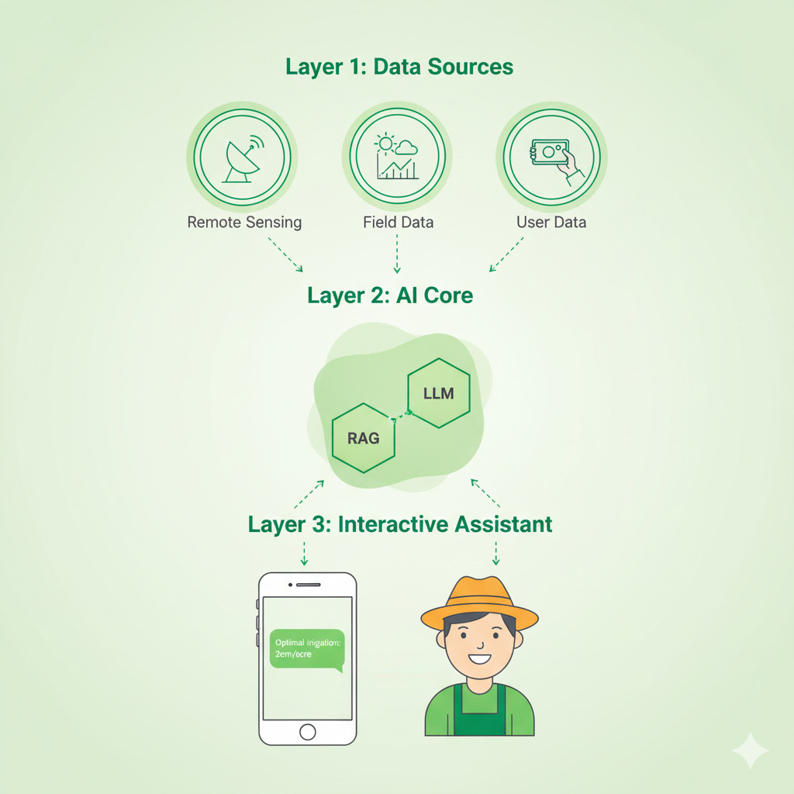

Kiến trúc Công nghệ của AiRRVie
Sức mạnh của AiRRVie đến từ sự tích hợp thông minh giữa các lớp dữ liệu, mô hình AI và giao diện người dùng, tạo nên một hệ thống hỗ trợ nông nghiệp toàn diện.
Lớp 1: Nền tảng Dữ liệu Đa nguồn (Data Layer)
- Dữ liệu Viễn thám: Ảnh vệ tinh từ Sentinel-1/2, NICFI, và MODIS cung cấp thông tin bao quát về môi trường.
- Dữ liệu Thực địa: Dữ liệu lịch sử về độ mặn, thủy văn, chất lượng đất từ các đối tác nghiên cứu.
- Dữ liệu Người dùng: Thông tin và hình ảnh thực tế từ đồng ruộng do chính nông dân cung cấp.
Lớp 2: Lõi Xử lý AI (AI Core)
- Mô hình Phân tích Môi trường: Các mô hình AI nền tảng (Foundation Models) được huấn luyện để tự động lập bản đồ các chỉ số quan trọng như độ mặn, hạn hán và chất lượng đất trên quy mô lớn.
- Mô hình Phân tích Đồng ruộng: Các mô hình chuyên biệt phân tích hình ảnh và dữ liệu do nông dân cung cấp để chẩn đoán sức khỏe cây trồng và dự báo năng suất cho từng thửa ruộng cụ thể.
Lớp 3: Trợ lý AI Tương tác (Assistant Layer)
Giao tiếp với người dùng, vận hành bởi một Mô hình Ngôn ngữ Lớn (LLM) xây dựng trên nền tảng NuocGPT. Trợ lý AI này tổng hợp kết quả phân tích từ Lõi AI, kết hợp với kiến thức khoa học được làm giàu bằng kỹ thuật RAG (Retrieval-Augmented Generation), để đưa ra những khuyến nghị canh tác chính xác, đáng tin cậy và dễ hiểu nhất.
